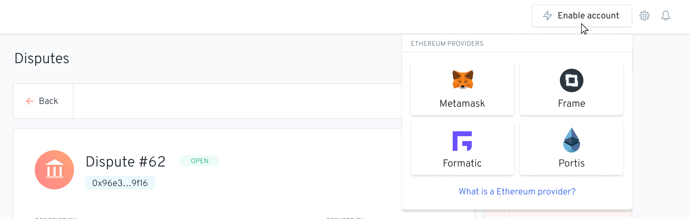
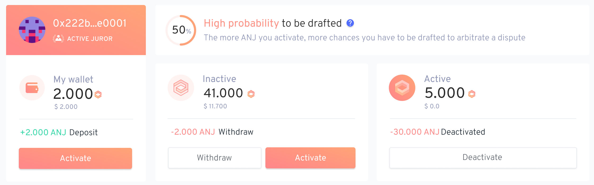
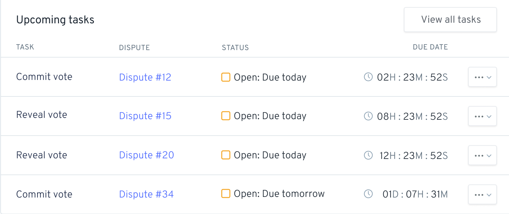
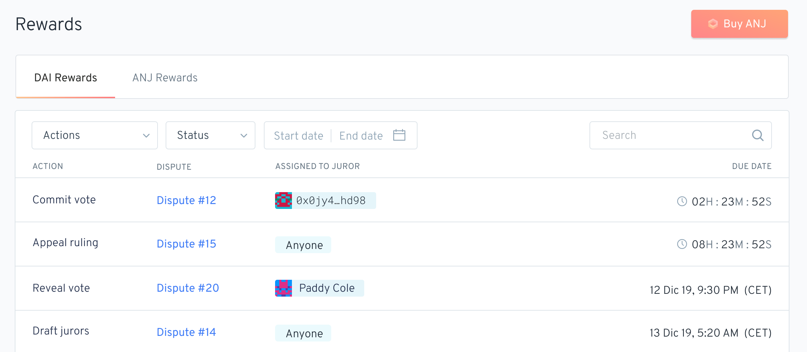
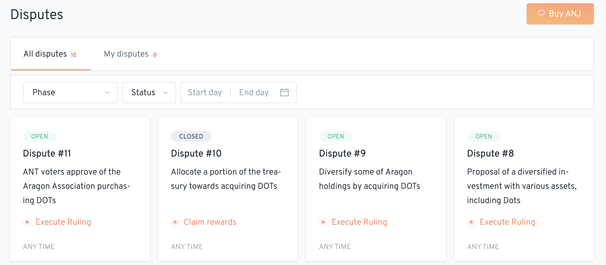
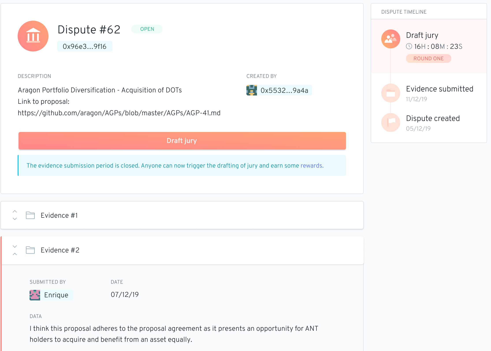

The Aragon Court Dashboard is the central app where all dispute-related tools are available for jurors. It also contains detailed information about past and current disputes, including evidences, rulings, status history and much more. The following guide presents an overview of the various sections of the Dashboard.
By default, the Dashboard is accessible to all users. General information and statistics are available on the main page as well as more specific information related to disputes, tasks, and jurors in their respective page. However, it is when the app is connected to an Ethereum account that it really comes alive and offer its full potential.
In order to connect your Ethereum account to the Aragon Court Dashboard, simply click on the "Enable account" button at the upper right and select the provider of your choice.

The following Ethereum providers are currently supported:

The first section you will see at the top of the Dashboard contains your ANJ balance information. This section is divided into three columns: My wallet, Inactive and Active.
My wallet shows the amount of ANJ that your Ethereum wallet currently contains and its relative value in US dollars. Those tokens are not being managed by the Court and are at any given time fully under your control. To activate them and increase your chances of being drafted as a juror, you can click the Activate button at the bottom of the section and a side panel will appear asking for the amount of ANJ that you want to activate. The amount will be transferred to the Active section once the transaction is executed.
If you don't own any ANJ tokens, you can click the Buy ANJ button at the top right of the dashboard. Click here to learn more about the various ways to obtain ANJ.
The second column contains your inactive ANJ balance along with its value in US dollars. Inactive ANJ is held in the Court contract but doesn't increase your probability of being drafted. Two actions are available when you have an inactive balance:
The third column contains your active ANJ tokens. Active tokens serve three main purposes:
Each column contains its own history of recent transactions.
Finally, at the top of the section, you can see in real-time your probabilty of being drafted as a juror. This probability takes into account the number of disputes and their current state.

The Aragon Court requires certain tasks to be executed at various points in the life-cycle of a dispute. Some of them can be executed by anyone while others are strictly assigned to specific accounts. You can quickly see every task assigned to you along with their due date in the Upcoming Tasks section of the main page. A page dedicated to tasks is also available by clicking the Tasks menu item in the left side panel.
If you are concerned about missing important tasks, don't worry, email notifications will be sent to you.
The following list contains every task you may encounter:
Draft jury: This task must be executed at the beginning of a round to select the jurors. Anyone can execute this task by clicking on the "Draft jury" button of the dispute. A small DAI reward is granted for successfully executing the task.
Commit vote: One of the most important tasks in the Aragon Court. When a juror is drafted to adjudicate a dispute, their duty is to review the submitted evidences and commit a vote within the voting period limit. Failure to execute this action would penalize the juror. Click here for more information about commiting votes.
Reveal vote: Since votes are secret until the end of the voting period, a task is also needed in order for the ruling to be unveiled. However, an option is available to make this task fully automated. Click here to learn more about it.
Appeal ruling: Once the ruling is revealed, it can be appealed by anyone who disagree with its result. Be aware that you need to stake an amount of DAI to appeal a ruling. You will get rewarded if the ruling ends up turning in your favor at the end of the dispute. Learn more about appeals here.
Confirm appeal: To officially appeal a ruling and launch a new adjudication round, a second account also needs to stake an amount of DAI to confirm that there is indeed a need for an appeal. Learn more about appeal confirmation here.
Execute ruling: If no appeal has been requested and confirmed within their respective periods of time, the "Execute ruling" task is available to finalize the dispute. Click here to learn more about final rulings.

Rewards can be obtained in multiple ways, both as a juror and as a normal user.
As a juror:
As a normal user:

Disputes are at the core of the Aragon Court. A dedicated page can be accessed by clicking the Disputes menu item in the side panel where you will see a list of disputes related to your account as well as every other past and active disputes.
By clicking on one of them, you will get redirected to a page containing all the relevant details to this specific dispute, like its current status, description, history and evidences. Additionally, every single task related to a dispute can be executed from here. Click here for a complete guide about the life-cycle of disputes and what you need to do as a juror to manage them.
